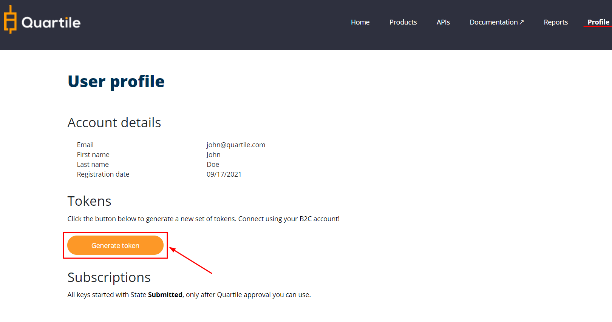
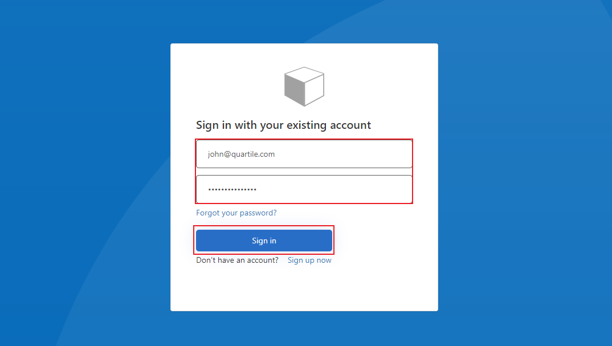

Create Authorization
OAuth2 JWT authorization is a secure way to transfer your personal data and validate your identity.
By default you need to create a set of tokens. In this set of tokens, you will receive an authorization token and a refresh token.
-
Authorization Token: Use this token to make API request! Send this token in the request header. The token expires in 720 minutes (12 hours) after being created.
-
Refresh Token: Use this token to request a new set of tokens. Token expires in 14 days after being created.
Warning Refresh token
When the access token expires and you request a new set of tokens, the refresh token will also be updated! So always save the last refresh token, so you won't have any problems. The refresh token may expire or be disabled when you request a new set of tokens!
You can learn how to deal with this "problem" in the session: Handling With Refresh Token
Step 1. Access Profile¶
After login, to to the "profile" page. You will see a "Generate Token" button, click this button. You will be redirected to new page where you can generate token.
Generate Token¶

Fill in Quartile email and password, click on "sign in".¶

If you have logged in correctly, a set of tokens will be generated.¶
{
"authorization": {
"token": "eyJ0eXAiOiJKV1QiLCJhbGciOiJSUzI1NiIsImtpZCI6I...",
"type": "Bearer",
"expires_in": 43200,
"expires_at": "2022-06-10T17:08:48",
"not_before": 1627058225,
"note": "Use this token to make the request in the API..."
},
"refresh": {
"token": "eyJraWQiOiJjcGltY29yZV8wOTI1MjAxNSIsInZlciI6Ij...",
"expires_in": 1209600,
"expires_at": "2022-06-24T17:08:48",
"note": "Use refresh_token to request a new set of tokens.
When the access token expires and you request a new set of tokens,
the refresh token will also be updated! So always save the last refresh token,
so you won't have any problems. The refresh token may expire or be disabled when
you request a new set of tokens"
}
}
Step 2. Endpoints authorization, refresh and validate¶
Although the "Authorization" url is available, you don't need to use it because you will use the dev portal to generate a new set of tokens. With the generated tokens you can make API calls and request new tokens through the refresh endpoint.
Access: OAuth API
| Method | Type | URL | Description |
|---|---|---|---|
GET |
Authorization | /auth/v1/token?code={code} | The authorize token, normally the user with a customer profile does not have access to this data. If this is the case, you can obtain new tokens in the Tokens - Developer Portal > Profile. |
POST |
Refresh | /auth/v1/refresh-token | You need to enter the update token. If you do not have this data, "log in" again on the portal and request a new set of tokens (authorization token and refresh token). Always save the last refresh token to use next time. |
POST |
Validade | /auth/v1/validate-token | You can verify that the authorization token is valid. |